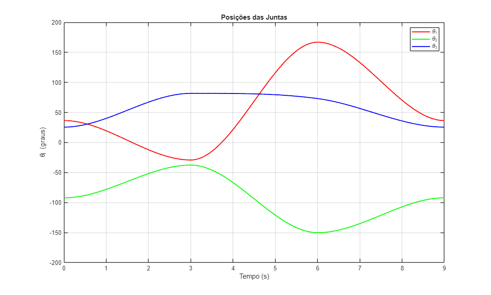
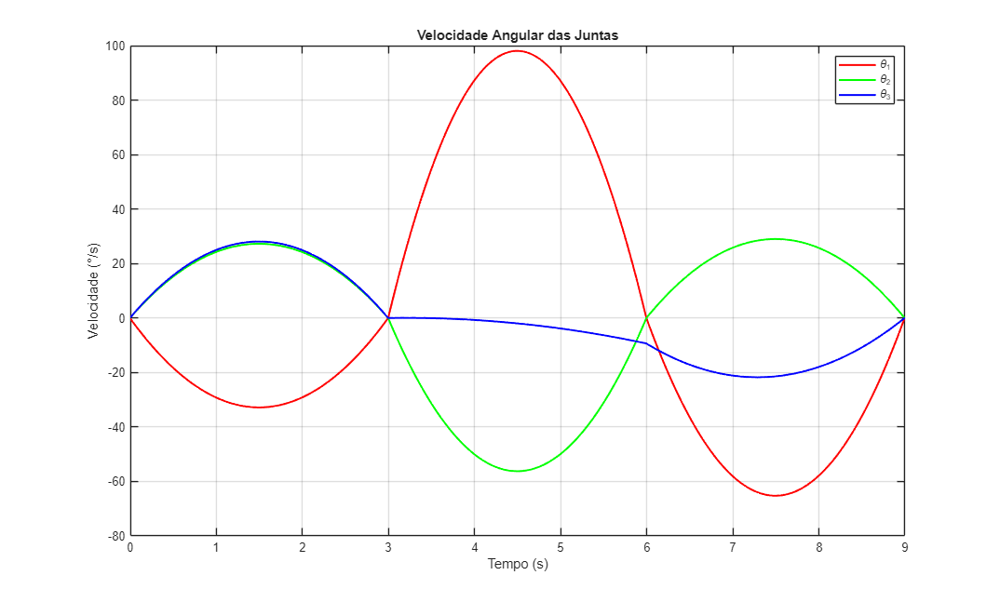
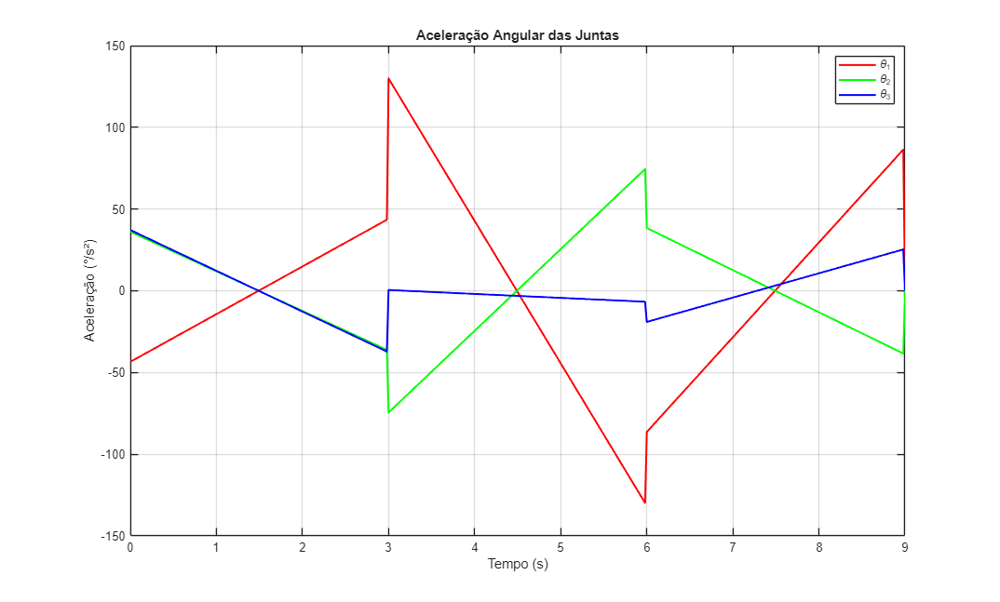

Exercicio 3
Executa o planejamento e geração da trajetória para um manipulador RRR planar, converte para o espaço cartesiano e plota posição, velocidade e aceleração das juntas e da extremidade.
Contents
Calling Syntax
I/O Variables
Nenhuma.
Example
Ex3_LS3.m
Hypothesis
RRR planar robot
Limitations
Depende de da trajetoria e dos limites propostos pelo enunciado
Setup Inicial
Definição dos pontos de trajetória desejados no formato do usuário [x, y, theta (graus)]:
uform_vec = [
0.758 0.173 0.0;
0.6 -0.3 45.0;
-0.4 0.3 120.0;
0.758 0.173 0.0
];
T = 3;
Ts = 1/100;
thpath = trajectorygenerationrrr(uform_vec, T, Ts);
Conversão para o espaço cartesiano
L = [0.5; 0.3]; N = size(thpath, 1); traj_cart = zeros(N, 3); for i = 1:N theta = thpath(i,:)'; Tm = kin(theta, L); traj_cart(i,1) = Tm(1,4); traj_cart(i,2) = Tm(2,4); traj_cart(i,3) = atan2d(Tm(2,1), Tm(1,1)); end vel_cart = [diff(traj_cart) / Ts; zeros(1,3)]; acc_cart = [diff(vel_cart) / Ts; zeros(1,3)]; t = 0:Ts:(size(thpath,1)-1)*Ts;
Plot 1 – Posição angular (em graus)
figure; plot(t, rad2deg(thpath(:,1)), 'r', 'LineWidth', 1.5); hold on; plot(t, rad2deg(thpath(:,2)), 'g', 'LineWidth', 1.5); plot(t, rad2deg(thpath(:,3)), 'b', 'LineWidth', 1.5); xlabel('Tempo (s)'); ylabel('\theta_i (graus)'); legend('\theta_1','\theta_2','\theta_3'); title('Posições das Juntas'); grid on;

Plot 2 – Velocidade angular (graus/s)
thdot = [diff(thpath) / Ts; zeros(1,3)]; figure; plot(t, rad2deg(thdot(:,1)), 'r', 'LineWidth', 1.5); hold on; plot(t, rad2deg(thdot(:,2)), 'g', 'LineWidth', 1.5); plot(t, rad2deg(thdot(:,3)), 'b', 'LineWidth', 1.5); xlabel('Tempo (s)'); ylabel('Velocidade (°/s)'); legend('\theta_1','\theta_2','\theta_3'); title('Velocidade Angular das Juntas'); grid on;


Plot 3 – Aceleração angular (graus/s²)
thddot = [diff(thdot) / Ts; zeros(1,3)]; figure; plot(t, rad2deg(thddot(:,1)), 'r', 'LineWidth', 1.5); hold on; plot(t, rad2deg(thddot(:,2)), 'g', 'LineWidth', 1.5); plot(t, rad2deg(thddot(:,3)), 'b', 'LineWidth', 1.5); xlabel('Tempo (s)'); ylabel('Aceleração (°/s²)'); legend('\theta_1','\theta_2','\theta_3'); title('Aceleração Angular das Juntas'); grid on;

